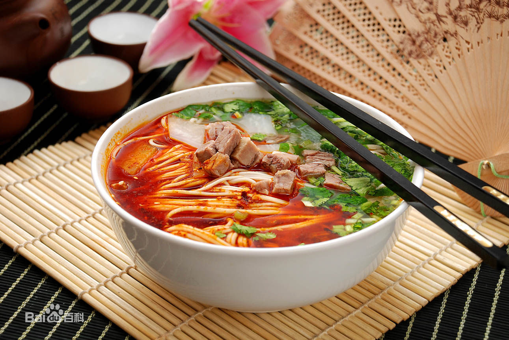
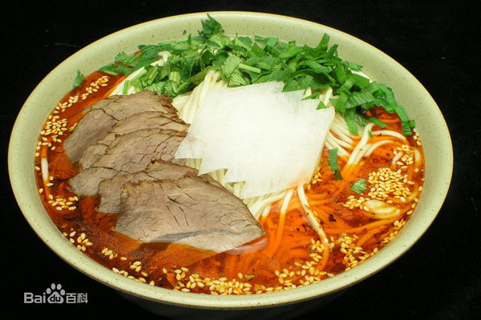

基本介绍
兰州牛肉面，又称兰州清汤牛肉面，是“中国十大面条”之一，是甘肃省兰州地区的风味小吃。它以“汤镜者清，肉烂者香，面细者精”的独特风味和“一清二白三红四绿五黄”，一清（汤清）、二白（萝卜白）、三红（辣椒油红）、四绿（香菜、蒜苗绿）、五黄（面条黄亮），赢得了国内乃至全世界顾客的好评。并被中国烹饪协会评为三大中式快餐之一，得到美誉“中华第一面”。
坊间传说，兰州牛肉面起源于唐代。目前有史料记载的是兰州牛肉面始于清朝嘉庆年间，创始人：陈维精。经后人传承改进，以“一清(汤)二白(萝卜)三红(辣子)四绿(香菜蒜苗)五黄(面条黄亮)”统一了兰州牛肉面的标准。其制作的五大步骤无论从选料、和面、饧面，还是溜条和拉面，都巧妙地运用了所含成分的物理性能，即面筋蛋白质的延伸性和弹性。
制作方法
选面：一般要选择新鲜的高筋面粉，兰州有牛肉拉面专用粉。不宜选择陈面，因为陈面中的蛋白质活性大大降低，而且储存过久的陈面由于外界环境的影响，容易发霉变质，其内所含的蛋白质分子，在蛋白酶（由于污染等原因，蛋白酶的活性增强）的作用下，蛋白质分子分解成氨基酸，使蛋白质无法与水结合形成面筋，因而大大降低了面筋的生成。只有新鲜的高筋质面粉（兰州牛肉面专用粉），蛋白质含量高，才能为拉面的制作成功保证。
和面：首先应注意的是水的温度，一般要求冬天用温水，其它季节则用凉水。因为面团的温度易受自然气温的影响，通过和面时用水温度的不同，使和好的面团温度始终保持在30℃，因为此时面粉中的蛋白质吸水性最高，可以达到150%，此时面筋的生成率也最高，质量最好，即延伸性和弹性最好，最适宜抻拉。若温度低于30℃，则蛋白质的吸水性和质量会随温度的下降而下降。超过30℃，同样也会降低面筋的生成，当温度达到60℃时，则会引起蛋白质的变性，而失去其性能。就是要使面团保持在最适宜的抻拉范围。和面技巧仍是最关键。
汤面：饧，即将和好的面团放置一段时间（一般冬天不能低于30分钟，夏天稍短些），其目的也是促进面筋的生成。放置还可以使没有充分吸收水分的蛋白质有充分的吸水时间，以提高面筋的生成和质量。
历史渊源
兰州清汤牛肉拉面，原为西北地区招待高级宾客的风味食品。因为味美可口，经济实惠，不仅在兰州比比皆是，而且在全国各省乃至世界许多国家和地区都有了兰州牛肉面馆。兰州本地人一般称兰州牛肉拉面为“牛肉面”。年轻人亦称之为“牛大”或“牛大碗”，取“大碗牛肉面”之意。
兰州拉面的历史已经有200年，创始人陈维精，是清朝嘉庆年间国子监太学生。在兰州牛肉面的改良和统一标准(一清，二白，三红，四绿，五黄)当中陈位林、陈谐声与陈和声兄弟俩起到了关键作用，把这一街边小吃变为大众消费的美食。热锅子面，是马保子于1915年始创的，当时马保子家境贫寒，为生活所迫，他在家里制成了热锅牛肉面，肩挑着在城里沿街叫卖。后来，他又把煮过牛、羊肝的汤兑入牛肉面，其香扑鼻，大家都喜欢他的牛肉面。接着他开了自己的店，不用沿街叫卖了，就想着推出免费的“进店一碗汤”，客人进得门来，伙计就马上端上一碗香热的牛肉汤请客人喝，爽，醒胃。马保子的清汤牛肉面名气大振，马保子经营到1925年，由其子马杰三接管经营，马杰三继续在清字上下功夫，不断改进牛肉拉面，直到后来名振各方，被赠予“闻香下马，知味停车”的称誉。识别兰州拉面的正宗与否，要一看有没有进店免费一碗汤，正宗必有汤赠，那牛羊肝的汤是明目的，西域人多目光如炬，显然与喝此汤有关；二看牛肉拉面的汤是否清，汤浊就不是正宗了。可能赠汤环节早已省略了。
兰州牛肉面品牌众多，竞争激励，公款吃喝骤减，致使高中端酒店业萧条，兰州的不少大酒店纷纷转型牛肉面，这使得牛肉面行业面临考验，许多牛肉面馆不得不在口味上狠下功夫，以保持市场占有率。